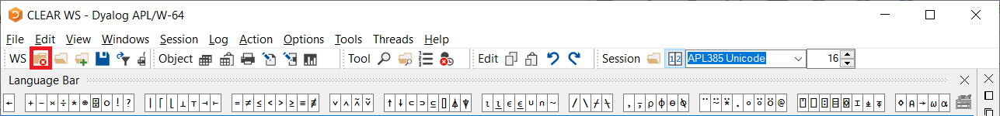

)load res/DyalogTutor_EN.dws
Notes & Questions:
what programming conventions should be adopted? should the original style be kept? e.g. variable naming with upper VS lower case letter for arrays, etc.
Bernard originally talks about how multiple assignment without () on the left is allowed but discouraged for compatibility reasons with other APLs; I kept the paragraph and included a note on how such a thing is bad and should be avoided; should this small part be removed altogether?
I wrote 1.4 Different Types of Numbers to include a first reference to complex numbers; is this a good place to mention them for the first time?
the first sentence of section 2 says “an array is a set of zero or more items”; while I don’t think “set” here was intended in the mathematical sense, I changed it to “sequence” as I feel it is more accurate.
can I drop passages in which differences between Dyalog Classic and Dyalog Unicode are explained? Doesn’t everyone just install Dyalog Unicode nowadays?
the author talks about () vs [] for indexing in different languages but doesn’t mention the fact that indexing in APL is 1-based while in many other languages it’s 0-based… Shouldn’t this be, at least, mentioned briefly?
in section 8 the author demonstrates some user commands like )save )copy )pcopy )load )continue etc, and for many of those uses random paths that do not exist; for that matter, I included the examples formatted like so:
)copy Toolbox Hammer Screwdriver
should I create an appropriate set of folders/workspaces so that the examples make sense?
Chapter B: Data and Variables¶
When you use APL, you type an expression or a command into the session window, and the result of the expression (or a message resulting from the execution of the command) is displayed on the next line(s). So an APL “session” is a sequence of user input lines (expressions and/or commands) interleaved with the results of the expressions.
If you type these expressions and/or commands in the Dyalog APL software you installed, or on the TryAPL, you will see that APL initially positions the input cursor 6 spaces in from the left margin. Unless you deliberately move the cursor before you start typing, the expressions you enter into the system will therefore be indented; you can evaluate what you type by pressing Enter, which will make the result appear below what you typed and left aligned with the margin. This interactive session is commonly referred to as an interpreter session because some software is interpreting what you type and providing you with results on the fly.
This book, however, was written in Jupyter notebooks, which works in a slightly different way. In here, you can find blocks of text (like the one you are reading right now) interleaved with code blocks. Depending on where you are reading this, these code blocks may be static or they may be interactive, allowing you, the reader, to change them and run them at will. The expressions you enter go in the shaded rectangles (the input cells, preceded by a In [X]:) and you can evaluate them by pressing Ctrl+Enter. The results of the expressions are then placed inside white rectangles (the output cells, preceded by the corresponding Out[X]:) which get updated when you re-evaluate the same input cell.
It is recommended that you go through this tutorial in front of your computer, and experiment by typing the expressions given below into the Dyalog APL interpreter session. Alternatively, if you are reading the book online in a dynamic format, you are encouraged to re-run the input cells for yourself. Either way, try changing the expressions, and observe the new results.
1 - Simple Numeric Values¶
1.1 Our First Operations¶
Let’s try some simple expressions:
27 + 53
1271 - 708
644 - 832
Notice that APL uses a different symbol known as high minus (¯) to distinguish between a negative value and the function subtract (-). If you wish to enter a negative value, you can enter this special symbol by pressing APL+2 (or by clicking the symbol in the “Language Bar”).
Let’s continue with some more expressions:
86 ÷ 4 ⍝ The Divide sign is obtained by pressing APL+=
59 × 8 ⍝ The Multiply sign is obtained by pressing APL+-
If you are familiar with other programming languages, you may be accustomed to using a slash (/) for division, and a star (*) for multiplication. Let’s see what might happen if you mistakenly use * in APL:
7 * 3 ⍝ In APL the star means "Power"
⍝ so that 7 * 3 is equivalent to 7 × 7 × 7
The slash also has a different meaning in APL, we’ll get to that latter.
1.2 Variables¶
As in any other programming language, it is possible to create variables. Just choose a name and use the assignment arrow (←) to assign it to a value. The value can be a single item or several items separated by spaces. The assignment arrow can be entered by pressing APL+[.
Discount ← 0.15 ⍝ Read it as: Discount gets 0.15
Years ← 1952 1943 1956 2020
Purchased ← 4000
To obtain the value of a variable, just type its name and evaluate the expression, like this:
Discount
Years
Variable names are case sensitive. This means that APL considers a lower-case letter and an upper-case letter to be two different characters. So the three variables YEARS, Years and years, would be distinct, and could contain different values. If you misspell the name of a variable, an error message will be displayed if that name is unknown:
discount ⍝ We typed a lower-case "d", instead of "D"
⍝ The message "VALUE ERROR" means that the
⍝ name "discount" is currently undefined.
VALUE ERROR: Undefined name: discount
discount ⍝ We typed a lower-case "d", instead of "D"
∧
Variable names must follow certain rules:
They must contain only letters, in lower or upper-case, including some accented letters (cf. below), and the digits (0 to 9).
The APL alphabet also includes the Greek letter Delta (
∆), entered using APL+H, the Underscore sign (_), and also the Underscored Delta (⍙), entered using APL+Shift+. (dot).They cannot start with a digit.
The following variable names are valid:
∆x ← 1 ⍝ with Delta
∆x
Fly⍙Airlines ← 2 ⍝ with Underscored Delta
Fly⍙Airlines
My_car_is_green ← 3 ⍝ with Underscores
My_car_is_green
Hote273 ← 4 ⍝ with digits
Hote273
Bétise_à_Caimbrai ← 5 ⍝ with accented letters
Bétise_à_Caimbrai
But 5à7 is not valid, because it begins with a digit:
5à7 ← 6
SYNTAX ERROR
5 à7←6
∧
In this document, most variable names begin with an upper-case letter, with the remainder in lower-case. This is purely for consistency and ease of use.
The letters that are allowed as part of variable names are:
0123456789
ABCDEFGHIJKLMNOPQRSTUVWXYZ_
abcdefghijklmnopqrstuvwxyz
ÀÁÂÃÄÅÆÇÈÉÊËÌÍÎÏÐÑÒÓÔÕÖØÙÚÛÜÝẞ
àáâãäåæçèéêëìíîïðñòóôõöøùúûüþ
∆⍙
Additionally, variable names can contain underlined upper cases letters, which look something like ABCDEFGHIJKLMNOPQRSTUVWXYZ. It is strongly recommended that you do not use the underscored letters which are only included to support old applications. Today, underscored letters are regarded as an anachronism, and are deprecated in modern versions of APL. They are not part of the Unicode character set and we weren’t even able to include them here: the enumeration above is just styled like the underscored letters, it is not really those letters. When a standard Unicode font is used, the APL underscored letters correspond to the Unicode circled alphabet, which is displayed like this:
ⒶⒷⒸⒹⒺⒻⒼⒽⒾⒿⓀⓁⓂⓃⓄⓅⓆⓇⓈⓉⓊⓋⓌⓍⓎⓏ
Although it is permitted, the use of accented characters is also not recommended because some people may be unable to enter them using their normal keyboard.
∆ and ⍙ may also cause problems if you ever want to inter-operate with other software, and are best avoided.
1.3 Operations on Variables¶
Variables can be used in any expression or calculation. For example, if we want to calculate the amount of the discount applied to the things we purchased, we can write:
Amount ← Purchased×Discount
Amount
When the result of an expression is assigned to a name, it is not displayed. This is why we have entered a second expression to have the value displayed. If the result of an operation is not assigned to a name, it is immediately displayed, but then the value of the result cannot be reused directly in another expression:
Purchased × Discount
It is of course possible to change the contents of a variable. The previous value is then lost.
Discount ← 0.185
It is possible to assign values to several variables in a single expression:
(G H J) ← 30 51 49 ⍝ G gets 30, H gets 51, and J gets 49.
This Multiple assignment is an elegant way of allocating a set of values to some distinct variables:
(Colette Bernard Line Now) ← Years
Colette
Line
Note that it is possible to write multiple assignments without parentheses on the left:
G H J ← 30 51 49
Colette Bernard Line Now ← Years
However this is highly discouraged. Using parentheses indicates much more clearly the intent of performing Multiple assignment and helps prevent some erroneous behaviour. For example, notice how the expression below raises an error because we are trying to assign 5 to 3, and yet, var gets assigned 5:
var 3 ← 5
SYNTAX ERROR
var 3←5
∧
var
However, if we use parentheses the assignment is not performed at all:
(var 3) ← 50
SYNTAX ERROR
(var 3)←50
∧
var
Another argument against using Multiple assignment without parentheses is that some other APL systems require them, so if compatibility across APL implementations is an issue for you, we recommend that you use parentheses in Dyalog APL as well.
1.4 Different Types of Numbers¶
We have already used many different numerical values in our examples without worrying too much about what they really are. We should note that, for the computer, not all numbers are created equal.
Integer numbers are the easiest to deal with, and we have seen plenty of them already. Those are the whole numbers and they can be positive, or negative, or 0:
Integers ← ¯3 5 ¯46 10004 0
Integers
If we include a dot . and specify decimal parts for our numbers, then we are no longer dealing with integers, but instead with floats:
Floats ← ¯3.4 5.61 45.9
Floats
Dyalog APL knows a little bit of maths and will understand that a float with decimal part equal to 0 is actually an integer:
3.0
¯5.000000
Finally, if we dive deeper into the realms of mathematics, we can find complex numbers, which will be further explored later on. For now, you can think of complex numbers as real numbers that come in pairs (real numbers are the numbers you are very much accustomed to). In Dyalog APL we use a J to separate the real part of the number from the imaginary part, that is, to identify the pair I just mentioned:
Complex ← 3J1 ¯5J1.2 0J¯1.01
Complex
Because Dyalog APL knows a little bit of maths, if the number to the right of the J is 0, Dyalog will automatically convert it to the appropriate integer or float. Note that this does not happen (because it is not correct) if the 0 is on the left of the J:
¯3.56J0
3J0 ⍝ Same as 3.
0J1 ⍝ NOT the same as 1.
2 - Arrays of Items¶
In APL, an array is a sequence of zero or more items. The variable Years that we used in the previous section is an array of 4 items.
2.1 Create a List or a Matrix¶
To enter a short list of items, just type them one by one separated by spaces, and assign the list to a name. For example, here is the number of TV sets sold during the last 10 days by a shopkeeper:
Sales ← 6 1 8 12 3 3 5 4 7 9
If you need to enter a very long list of items, which will not easily fit on a single line, please refer to Chapter H, Section 1, where a simple method is explained.
Imagine now that somebody has noted his income and expenses during the first six months of this year:
Month |
Income |
Expenses |
|---|---|---|
January |
4210 |
3121 |
February |
4807 |
4284 |
March |
3609 |
7543 |
April |
5712 |
2601 |
May |
2305 |
3364 |
June |
4568 |
2784 |
We shall see later how we can store the names of the months; for now, let us just try to store the numeric values from the table above in a variable.
To do this, we have to give two pieces of information to the computer:
the shape of the array: in this case, 6 rows and 2 columns;
the contents (or items) of the array, in row order.
The function that organises a set of items into an array of a specified shape is known as Reshape and is symbolised by the Greek letter Rho (⍴). It is easy to remember that Rho can be entered using APL+R.
The Reshape function is used as follows: R← Shape ⍴ Contents.
For example, to obtain a 6 by 2 array of items:
Money ← 6 2 ⍴ 4210 3121 4807 4284 3609 7543 5712 2601 2305 3364 4568 2784
Money ⍝ Let's verify the result.
2.2 Special Cases with Reshape¶
If there are too many items, the extra items are ignored:
Contents ← 12 56 78 74 85 96 30 22 44 66 82 27
3 3 ⍴ Contents ⍝ The last 3 items (66 82 27) have been ignored.
However, if there are fewer items than implied by the shape, the list of items is reused as many times as necessary to fill the array:
3 9 ⍴ Contents ⍝ Notice how the Contents variable
⍝ starts repeating on the second row (under the 74)
⍝ and also by the end of the third row
This property is often used to create special patterns:
3 4 ⍴ 0 ⍝ Fill an array with a single value.
30 ⍴ 1 5 0 0 ⍝ Repeat a pattern.
3 4 ⍴ 2 4 6 8 ⍝ Repeat a pattern.
5 5 ⍴ 1 0 0 0 0 0 ⍝ Shift values.
2.3 Multi-dimensional Arrays¶
APL is not limited to arrays with two dimensions, it can handle arrays with 3, 4, indeed up to 15 dimensions.
Imagine that a company has stored the production of its assembly lines in a variable named Prod.
The variable contains 5 years of production, on 2 assembly lines, and for 12 months per year. To represent the 3 dimensions on the screen, the array is displayed split into sub-arrays each representing a single year, as follows:
Prod ⍝ Notice the blank lines separating the sub-arrays,
⍝ one per year (5 in total).
This array is organised in dimensions that represent 5 years, 2 lines, 12 months: it is a three dimensional array. We can also say that its shape is 5 2 12.
3 - Shape, Rank and Vocabulary¶
3.1 Shape and Rank¶
The symbol ⍴, which we introduced above, can be used to obtain the lengths of the dimensions or the Shape of an array:
⍴ Years ⍝ Read this as "Shape of Years".
⍝ Years has 4 items.
⍴ Money ⍝ Money has 6 rows and 2 columns.
Shape ← ⍴Prod
Shape ⍝ Prod has 5 sheets (or planes), each having
⍝ 2 rows and 12 columns.
Now, what is the shape of Shape?
⍴ Shape ⍝ Prod has 3 dimensions.
The same result could have been obtained directly using the expression ⍴⍴ Prod:
⍴⍴ Prod
Prod has 3 dimensions; we say that its Rank is 3, or that it is organised along 3 criteria which are: Years / Lines / Months.
⍴⍴ Money
Money has 2 dimensions; we say that its Rank is 2, or that it is organised along 2 criteria which are: Months / Accounts.
Definition: The Rank of an array is the number of its dimensions. It can be obtained using the expression ⍴⍴ Array.
3.2 Scaling Down the Ranks¶
Using that formula, we can see that:
|
has a shape equal to |
|
and its rank is equal to ………… |
|
has a shape equal to |
|
and its rank is equal to ………… |
|
has a shape equal to |
|
and its rank is equal to ………… |
It seems consistent that some array must exist which has a rank equal to …… 0.
Such arrays are single items, like 1573 or 36.29 or the variable Discount used above.
⍴⍴ Discount ⍝ A single number has no dimensions.
⍴⍴ 36.29
We needed 3 numbers to express the shape of Prod, 2 numbers to express the shape of Money, and only 1 number to express the shape of Years… hence to express the shape of 1573 or Discount, we need no numbers:
⍴ 1573 ⍝ The answer displays as a blank line: the shape of
⍝ a single number is an empty array (0 items).
⍴ Discount ⍝ Ditto.
3.3 Vocabulary¶
In this book, we shall use the following terms:
Array |
is a generic word for any sequence of items (possibly containing a single item, or no items at all) |
||
Scalar |
is a single item like |
|
its rank is 0 |
Vector |
is a list of items like |
|
its rank is 1 |
Matrix |
is an array of rank 2 like |
|
its rank is 2 |
Table |
is a common name for a matrix |
||
Cube |
is a common name for 3-D arrays like |
|
its rank is 3 |
3.4 Beware!¶
3.4.1 - The Shape is Always a Vector¶
The shape of a value is always a vector, even if it contains only one item or even no items at all.
Shape ← ⍴Years
Shape ⍝ It looks like a scalar.
⍴⍴ Shape ⍝ But it is of rank 1, so it is a vector.
⍴ Shape ⍝ It is a vector with only one item.
This shows, in particular, that ⍴ Years does not return the length of the vector Years. ⍴ Years returns the shape of Years, which is a 1-item vector with the number 4. The length of Years (which is the scalar value 4) can be obtained with an appropriate primitive that will be introduced in Chapter C. Until then, use ⍴ with caution.
3.4.2 - Do Not Rely on the Visual Aspect of a Variable¶
Although scalars, vectors, and matrices may sometimes look the same when they are displayed, they should not be confused. Consider, for example, the following vector V and matrix M:
V ← 87 65 21 40
M ← 1 4 ⍴ 87 65 21 40
If we display their values, they look exactly the same:
V
M
But they cannot be easily added or multiplied together:
V + M
RANK ERROR: Mismatched left and right argument ranks
V+M
∧
Similarly, a scalar should not be confused with a 1-item vector or a 1-item matrix, or with any 1-item multi-dimensional array for that matter. The scalar has a rank of 0 whereas the vector has rank 1:
S ← 456 ⍝ Create a scalar.
V ← 1⍴456 ⍝ Create a one-item vector.
S ⍝ If displayed, they look the same:
V
⍴⍴S ⍝ But their ranks are different; the two variables
⍝ should not be confused.
⍴⍴V
3.4.3 - Displaying Long Vectors¶
If a vector is too long to be displayed in a single line on your screen, the interpreter session will wrap it onto several lines. But to prevent possible confusion with the display of a matrix, the second line and the following lines will not be aligned at the left margin, but will be indented 6 characters to the right.
In this book the output gets hidden and a horizontal scroll bar is provided. For example:
Bignum
4 - Simple Character Values¶
4.1 Character Vectors and Scalars¶
Up to now, we have used only numeric values, but we can also create textual data known as a character array. To identify a string of characters as text, we start and end it with a single Quote:
Text ← 'Today is August 7th, 2020'
Text
⍴Text
Trailer ← 'I type 7 trailing blanks '
Trailer
⍴Trailer
As these examples show:
The quotes are not part of the text, they’re just there to delimit it.
Text can include any character: letters, digits and punctuation.
So,
TextandTrailerare vectors. They are sometimes called Strings.APL does not recognize words; a character array is simple a set of characters.
Blank characters (spaces) are characters like any other characters; they do not have any special meaning. However, when a character array is displayed any trailing blanks are most often invisible.
A problem may occur when the text itself includes an apostrophe, for example in a sentence like “*It’s raining, isn’t it?”.
When you enter apostrophes as part of the text, you must double them, as shown below, to distinguish them from the delimiters:
Damned ← 'It''s raining, isn''t it?'
This is only a typing convention, but the doubled quotes are transformed into a single apostrophe, as you can see here:
Damned ⍝ The vector's size is equato to 23.
As mentioned above a character array can contain digits, but they are not considered to be numbers, and it is impossible to use them in a mathematical operation:
Hundred ← '100'
Hundred ⍝ It looks like a number.
⍴Hundred ⍝ But it isn't.
Hundred + 5
DOMAIN ERROR
Hundred+5
∧
Of course, a single character is a scalar:
Singleton ← 'p'
⍴Singleton ⍝ Do you remember? Scalars have no dimensions.
⍴⍴Singleton ⍝ Yes, it is definitely a scalar.
4.2 Character Arrays¶
We say, some pages ago, a list of months:
January
February
March
April
May
June
We can think of this as a list of \(6\) words, or as a matrix of \(6\) rows and \(8\) columns (the width of “February”). Both representations are valid, and both can be used in APL; let us study them one after the other.
To enter the months as a \(6\) by \(8\) matrix, one must use the Reshape (⍴) function:
To the left of the function we must specify the shape of the matrix we want to build:
6 8To the right of the function we must specify all of the characters (including any trailing blanks) that are necessary to fill each row to the proper length:
MonMat ← 6 8 ⍴ 'January FebruaryMarch April May June'
No space was typed between February and March; do you see why?
MonMat ⍝ Now, let us see the result.
Oops! We forgot that when the right argument is too short, ⍴ reuses it from the beginning. That’s the reason why the last row is wrong. We must add \(4\) trailing blanks.
Facility¶
You do not have to re-type the entire expression.
If you are working in the interpreter session, just move your cursor up to the line where you defined MonMat, add the missing blanks, and press the Enter key.
APL will then copy the modified line down to the end of your session and automatically restore the original line to its original state. As a consequence, the interpreter window always displays the sequence of expressions and results in the order in which you typed them.
If you are working with the Jupyter notebook version of this book, you can just go to the input cell where you made your mistake and correct it in place. Otherwise, just copy the cell and correct the mistake in the copied cell:
MonMat ← 6 8 ⍴ 'January FebruaryMarch April May June '
MonMat ⍝ That's right now!
⍴MonMat ⍝ As expected, it is a matrix.
Now, to enter the months as 6 words, one must type each word between quotes, and check that each closing quote is separated from the next opening quote by at least one blank (otherwise it would be interpreted as an apostrophe - remember, the juxtaposition of two quotes in a character string is used to enter a single quote):
MonVec ← 'January' 'February' 'March' 'April' 'May' 'June'
MonVec
⍴MonVec ⍝ It is a vector.
MonVec is a vector of a kind that we have not seen before, the items of which are 6 sub-arrays. This kind of an array is called a Nested Array and is the reason why we see those black boxes around the months.
Be patient! We shall study nested arrays very soon in this very chapter.
5 - Indexing¶
5.1 Traditional Vector Indexing¶
Our variable Contents contains the following items:
Contents
To extract one of these items, you just have to specify its position, or Index, between Square brackets:
Contents[3]
In some languages, programmers use parentheses instead of brackets, but parentheses have many other different uses. In APL, parentheses have one and only one use, namely to specify the order of evaluation of a complex expression. In this respect, the use of square brackets for indexing makes APL more rigorous.
Of course, an index must follow some obvious rules: it must be an integer numeric value; it may not be negative or greater than the size of the vector. Otherwise, an “INDEX ERROR” will be reported.
It is possible to extract several items in a single operation, and in any order:
Contents[3 7 1 3 3 12] ⍝ You can see that an item can be selected
⍝ more than once.
The same notation allows you to modify one or more items of the vector. The only condition is that you must provide as many replacement values as the number of items you select, or give a single replacement value to use for all the selected items:
Contents[2 4 6] ← 7 11 80 ⍝ Three values replace three items.
Contents
Contents[8 11 12] ← 33 ⍝ One single value replaces three items.
Contents
This works exactly the same on character vectors:
'COMPUTER'[8 7 4 2 8 6]
Text ← 'BREAD'
Text[2 4] ← 'LN'
Text
5.2 The Shape of the Result¶
The index may be a numeric array of any shape: scalar, vector, matrix, or an array of higher rank. To understand what happens, there is a simple rule:
This rule is easy to verify. Let us restore the initial values of Contents:
Contents ← 12 56 78 74 85 96 30 22 44 66 82 27
And let us create a matrix of indexes:
MyIndex ← 3 5 ⍴ 5 5 4 4 8 6 12 6 11 12 10 6 1 4 9
MyIndex
Contents[MyIndex] ⍝ For example you can see that the index in row 2
⍝ column 5 was 12. So, it has been replaced by
⍝ the 12th item of Contents, i.e. 27.
The rule remains true if the indexed vector is a character vector. For example, imagine that we have a matrix named Planning, in which some tasks are planned (1) or not (0) over the next 12 months:
Planning ⍝ This is not very easy to interpret!
Let us replace the inactive periods by “-“, and the busy periods by “⎕”. This beautiful character, named Quad, can be entered by pressing APL+L.
'-⎕'[Planning+1] ⍝ Do you understand why we added 1?
⍝ And doesn't this look good?
Of course, the vector to be indexed was composed of only two characters, so the set of indexes had to be composed only from the values 1 and 2. This is the reason why we added 1 to Planning.
All the 0’s in Planning have been replaced by the 1st item (-), and all the 1’s have been replaced by the 2nd item (⎕).
5.3 Array Indexing¶
Just to make some experiments, let us create a new variable, named Tests:
Tests
Indexing an array is very similar to the method we say for vectors, but we now need one index for the row and one for the column; they must be separated by a Semi-colon. For example, to get (or replace) the value 55 in row 4, column 3, one types:
Tests[4;3]
It is of course possible to select more than one row and more than one column. If so, one obtains all the values situated at the intersections of the specified rows and columns.
Tests[1 5 6;1 3]
The result of indexing may sometimes be surprising. Let us extract 4 values from the first column:
Tests[1 2 5 6;1]
You probably expected the result to be displayed like a column? Really sorry!
The result of this expression is a vector, and a vector is always displayed as a row on the screen.
We shall see later that it is possible, using a little trick, to cause the result to be displayed vertically.
When you use indexing, you must specify as many indexes or sets of indexes as the array’s rank. For a 3-D array, you must specify 3 sets of indexes, separated by two semi-colons.
For example, suppose that we would like to extract the production of the 2nd assembly line, for the first 6 months of the last 2 years, from the array Prod. Let’s express that in order of the 3 dimensions: Years/Lines/Months:
The last 2 years are in positions |
4 5 |
The second assembly line |
2 |
The first 6 months |
1 2 3 4 5 6 |
Prod[4 5;2;1 2 3 4 5 6] ⍝ The result is a matrix: 2 years/6 months.
Remark 1¶
Because we can select rows and columns, the semi-colon is necessary to tell them apart:
Tests[1 2;3] ⍝ gives rows 1 and 2, column 3
whereas
Tests[1;2 3] ⍝ gives row 1, columns 2 and 3
Remark 2¶
It is also possible to select several items which are not at the intersections of the same rows or columns. To do so requires a special notation where the individual Row/Column indexes of each item are embedded in parentheses. The reason for this syntax will become clear in Section 6.3.
For example, let us select Tests[2;3] together with Tests[5;1] and Tests[1;2.
Tests[(2 3)(5 1)(1 2)]
5.4 Convention¶
To specify all items of a dimension, you just omit the index for that dimension, but you must not omit the semi-colon attached to it.
In the previous example, to obtain both assembly lines we could have typed:
Prod[4 5;1 2;1 2 3 4 5 6]
But it is shorter to type:
Prod[4 5;;1 2 3 4 5 6] ⍝ The omitted index means
⍝ "All the assembly lines".
In the same way:
Prod[4 5;2;] ⍝ The omitted last index means
⍝ "All the months".
And finally:
Prod[;;1 2 3] ⍝ The omitted indices mean
⍝ "All years and lines".
This convention also applies to replacing specific items. For example, to change all the items in the last row of Tests, we could type:
Tests[6;] ← 60 70 80
Tests
5.5 Warnings¶
We would like to draw your attention to some delicate details. Here is the first:
5.5.1 - Shape Compatibility¶
To replace several items in an array, the replacement array must have exactly the same shape as the array of indexes they replace.
For example, supposed that we would like to replace the four “corners” of Tests with the values 11 22 33 44 respectively.
We cannot successfully execute:
Tests[1 6;1 3] ← 11 22 33 44
LENGTH ERROR
Tests[1 6;1 3]←11 22 33 44
∧
Notice the LENGTH ERROR that was issued (note that this is a “Shape error”).
If we had extracted these four values, the result would have been a 2 by 2 matrix:
Tests[1 6;1 3] ⍝ Remember: row 6 was modified above!
So, to replace them, we cannot use a vector, as we have just tried to do. Instead we must organise the replacement array into a 2 by 2 matrix, like this:
Tests[1 6;1 3] ← 2 2 ⍴ 11 22 33 44
Tests ⍝ Notice the corners have the new values.
5.5.2 - Replace or Obtain All the Values¶
To replace all of the values in an array with a single value, it is necessary to use brackets in which the indexes of all the dimensions have been removed.
For example, imagine that we would like to reset all the values of Tests to zero.
Tests ← 0 would be wrong, because that would replace the matrix by a scalar.
The correct solution is
Tests2 ← Tests
Tests2[;] ← 0 ⍝ All the rows and columns are replaced by zero.
Tests2
For a vector, like Contents, we would write
Contents[] ← 123 ⍝ All the items are replaced by 123.
Contents
5.5.3 - “Pass-Through” Value¶
Imagine that we have a vector:
Vec ← 32 51 28 19 72 31
We replace some items and assign the result to another variable:
Res ← Vec[2 4 6] ← 50
What do we get in Res? Is it Res ← Vec[2 4 6], or is it Res ← 50?
Res
In fact, we get 50. We say that 50 is a Pass-Through value.
5.6 The Index Function¶
In APL, nearly all of the built-in functions (known as *Primitive Functions) are represented by a single symbol: + × ⍴ ÷ etc. Bracket indexing, as we introduced above, is an exception: it is represented by two non-contiguous symbols: [ and ]. This is one of the reasons why modern versions of APL also include an Index function.
It is represented by the symbol ⌷.
Beware: this is not the symbol Quad used in our planning example a few pages ago!
In fact, it looks like a Quad which has been squished, hence its name: Squish-Quad, or Squad for short. The Squad is obtained with APL+Shift+L.
When applied to a vector, Index takes a single number on its left.
3 ⌷ Contents ⍝ This is equivalent to Contents[3].
For now, we shall not try to extract more than one item from a vector; we need additional knowledge to do that.
For a matrix, Index takes a pair of values (row/column) on its left.
4 2 ⌷ Tests ⍝ This is equivalent to Tests[4;2].
It is possible to select several rows and several columns, using a special notation that will be explained in subsequent sections. The left argument of Index is now made of a list of rows followed by a list of columns, both parenthesised:
(1 3 6)(1 3)⌷Tests ⍝ This is equivalent to Tests[1 3 6;1 3].
6 - Mixed and Nested Arrays¶
Up to now we have dealt only with homogeneous arrays: scalars, vectors or higher rank arrays containing only numbers or only characters. An array was a collection of what we call simple scalars. In the early 1980’s enhanced versions of APL started to appear. They accepted a mixture of numbers and characters within the same array (so-called Mixed Arrays), and arrays could contain sub-arrays as items (so-called Nested Arrays).
In this chapter, we shall explore only some basic properties of Mixed and Nested arrays, just to help you understand what might otherwise appear to be unusual behaviour or unexpected error messages. We shall not go any further for now; Chapter I will be entirely dedicated to an extensive study of nested arrays.
Note that with the current widespread use of Nested arrays, it is now very common to refer to an “old-fashioned” array that is neither Mixed nor Nested as a Simple array.
6.1 Mixed Arrays¶
An array is described as a Mixed Array if it contains a mixture of scalar numbers and scalar characters.
It is easy to create such an array:
MixVec ← 44 87 'K' 12 29 'B' 'a' 'g' 46.3
⍴MixVec ⍝ This is a vector.
MixVec
MixMat ← 2 5⍴MixVec
⍴MixMat ⍝ That is a matrix.
MixMat
6.2 Four Important Remarks¶
6.2.1¶
In a vector like MixVec, each letter must be entered as a scalar: embedded within quotes, and separated from the next one by at least one blank space.
If the space is omitted, for example, if we type
'B''a''g'
APL interprets the doubled quotes as apostrophes, which yields B'a'g. This is not a sequence of 3 scalars, but a 5-item vector:
⍴ 'B''a''g' ⍝ 5 items.
⍴ 'B' 'a' 'g' ⍝ 3 items.
⍴⍴ 'B' 'a' 'g' ⍝ "No shape", so this is a scalar
6.2.2¶
When MixVec is displayed (see above), the three letters Bag are joined together, like the letters in any vector of characters.
This presentation might be confused with an array of 7 items, whose 6th item is the vector 'Bag'. That would be a Nested Array. We will soon learn how to investigate the structure of an array.
6.2.3¶
This confusion disappears in MixMat. Because the items of the matrix must be aligned in columns, “B” is placed under 44, “a” under 87, and “g’ under “K”. Here you can easily see that the three letters Bag are really three independent scalars.
6.2.4¶
A Mixed array is made up only of simple scalars (numbers or characters); it is not a Nested Array.
6.3 Nested Arrays¶
An array is said to be Generalised or Nested when one or more of its items are not simple scalars, but are scalars which contain other arrays. The latter may be simple arrays of any shape or rank (vectors, matrices, arrays), or they may themselves be Nested arrays.
A nested array can be created in a number of ways; we shall begin with the simplest one, known as Vector notation, or Strand notation. Here is how it works:
The items of an array are just juxtaposed side by side, and each can be identified as an item because it is:
either separated from its neighbours by blanks
or embedded within quotes
or an expression embedded within parentheses
or a variable name
Just to demonstrate how it works, let us create a nested vector and a nested matrix.
One ← 2 2 ⍴ 8 6 2 4 ⍝ Create two simple arrays,
Two ← 'Hello' ⍝ which will be used below.
NesVec ← 87 24 'John' 51 (78 45 23) 95 One 69
⍴NesVec ⍝ We have juxtaposed 8 items.
NesVec
The Jupyter notebook puts boxes around the items of the vector to make it easier to interpret the result. If the expression above were to be ran in the Dyalog APL interpreter session, the result would be
87 24 John 51 78 45 23 95 8 6 69
2 4
which is a bit difficult to read and interpret.
And now, a matrix!
NesMat ← 2 3 ⍴ 'Dyalog' 44 Two 27 One (2 3⍴1 2 0 0 0 5)
⍴NesMat
NesMat
Again, the notebook boxes the items of the matrix so we have an easier time interpreting the result. In the interpreter session the output would be
Dyalog 44 Hello
27 8 6 1 2 0
2 4 0 0 5
To obtain this kind of boxed presentation in the interpreter session, execute the following command (remember: a command begins by a closing parenthesis):
)Copy Util DISP
Then execute:
DISP NesMat
If you want this kind of boxing to be permanent, you can go to your session and type
]box ON
which, on your interpreter session, should actually print Was OFF, meaning that automatic boxing of nested arrays was OFF and now is ON. Because Jupyter notebooks have this option ON by default, typing ]box ON tells the option was already ON.
For demonstration purposes, we will turn the automatic boxing OFF to compare the results of viewing NesMat without having to use the DISP function:
NesMat
]box OFF
NesMat
DISP NesMat
You probably remember the mixed vector MixVec, which contained 3 adjacent scalars, “B”, “a”, and “g”. Let us compare the unboxed display of MixVec with a 7 item nested vector, whose 6th item contains the word “Bag”:
44 87 'K' 12 29 'Bag' 46.3 ⍝ Let us enter the nested array.
⍝ It is displayed like this.
MixVec ⍝ Then let's look at MixVec.
⍝ It is displayed like this.
If you look closely you will have observed that in the nested array the sub-vector Bag is separated from its neighbours not by a single space, but by two spaces: this should alert an experienced APLer that it is a nested array.
However, this difference is so small that the APL community, all over the world, uses a utility program, named DISPLAY, to draw boxes around arrays (nested or not), to make things clear. Let us examine it in the next section.
Notice that because MixVec is not nested it has no boxes around its items.
6.4 DISPLAY¶
DISPLAY is provided with Dyalog APL in a library workspace which itself is named DISPLAY. Because this library is by default on the Workspace Search Path of APL, you can easily add the DISPLAY function to your active workspace by typing the command:
)copy display ⍝ This copies the entire workspace, but it
⍝ contains only one single function: DISPLAY.
As you can see, applied to a simple scalar, DISPLAY already produces slight differences:
37
DISPLAY 37
'K'
DISPLAY 'K'
We see that the display results are centered in a 3-row area; for numerical simple scalars the top and bottom rows are empty, which creates the white region around the 37 you can see above. For character simple scalars, the bottom row underlines the character and the top row is left empty.
However, applied to a vector, DISPLAY will provide more information:
DISPLAY 54 73 19 ⍝ The default presentation uses line-drawing
⍝ characters to draw the box.
0 DISPLAY 54 73 19 ⍝ With the optional left argument set to 0, the
⍝ function uses standard characters.
The second, rougher, form of presentation is provided for use in circumstances where the line-drawing symbols in the APL font are not displayed or printed as intended. This will depend upon your version of the Operating System and on the display and printer drivers you are using.
6.4.1 - Conventions¶
The upper-left corner of the box provides information about the shape of the displayed value:
a single horizontal arrow for a vector:
two (or more) arrows for a matrix or higher rank arrays:
no arrow at all for scalars containing nested values, a concept we haven’t seen up to now
The bottom-left corner of the box provided information about the contents of the array:
~means that the array contains only numeric values:_(which actually goes unnoticed) means that the array contains only characters:+is used for mixed arrays:∊means that the array contains other arrays: it is a nested array:
6.4.2 - Examples¶
DISPLAY 78 45 12 ⍝ Display a plain numeric (~) vector (→).
DISPLAY 1 3 ⍴ 78 45 12 ⍝ With its two arrows, this matrix cannot be
⍝ confused with the vector show above.
DISPLAY 2 6 ⍴ 'Sunny Summer' ⍝ The bottom-left corner is a straigh line
⍝ because the array contains only text.
DISPLAY Prod[1 2;;1 3 5] ⍝ This array is of rank 3. So, 3 arrows
⍝ are used to represent it (1 horizontal
⍝ and 2 vertical arrows).
⍝ The bottom-left corner is ~ because the
⍝ array contains only numbers.
Mixed arrays are sometimes more complex to understand.
DISPLAY 54 'G' 61 'U' 7 19 ⍝ The array is a mixed (+) vector (→), and
⍝ all its items can be easily identified.
But the following array is more complex:
DISPLAY 54 3 'G' 'U' 7 '3' 19
Note that in the example above it is impossible to distinguish between the numeric value
3and the character value'3'. TheDISPLAYfunction actually tries to help us by underlining all character values, but unfortunately this coincides with the bottom border of the box. When the array being displayed becomes more complex, you will see this underlining, as the next example shows.The two adjacent scalars
'G'and'U'are displayed side by side; a vector ‘GU’ would have given a nested array, with a different representation, as you can see below:
DISPLAY 54 3 'GU' 7 '3' 19
Notice that, because one of the items of this array contains a vector, the array is “nested”, hence the ∊ sign at the bottom-left corner. Now the underlining of '3' is visible, so it is easy to see that it is a character. Since 7 is not underlined it is a number.
We shall discover more about DISPLAY when we study Nested arrays in detail (refer to I-1.3), but we can already use it to show the structure of the arrays that we have been working with. For example, our nested matrix NesMat:
DISPLAY NesMat
You can see that all the sub-arrays contained in NesMat are individually represented with the same conventions, making the interpretation easy.
6.5 Be Simple!¶
Up to now, the nested arrays we have met contained only “simple” items (scalars, vectors, matrices). Here is a completely weird matrix, which itself contains a small nested array made of the first two columns of NesMat:
Weird ← 2 2 ⍴ 456 (NesMat[;1 2]) (17 51) 'Twisted'
Weird ⍝ The default presentation is difficult to interpret!
DISPLAY Weird ⍝ Let us use DISPLAY to make things clearer!
Remark¶
Of course, even if APL can handle arrays as unusual as the one above, it is not advisable to build such arrays! Most nested arrays have a clear and straightforward structure.
Remember: in Section 4.2 we had a list of month names to store, and we had the choice between a matrix and a vector of vectors, that is to say a nested vector.
MonVec
Because its contents are homogeneous (made up only of vectors), this array has a simple structure that is clear and easy to interpret. DISPLAY shows it like this:
DISPLAY MonVec
Imagine now that we want to store the ages of the children of 5 families; we could enter them like this:
Children ← (6 2) (35 33 26 21) (7 7) 3 (19 14)
Children
DISPLAY Children
This array is not homogeneous; it is made of vectors mixed with a scalar. However, its structure is simple, and consistent. Together with the previous example, it is a pertinent usage of nested arrays.
6.6 That’s Not All, Folks!¶
In this section we have only described some basic things about nested arrays. APL provides a number of functions designed specifically to manipulate nested arrays, but it would be premature to introduce these now until we have fully explored all of the basic capabilities.
Nevertheless, if you want to learn a bit more on the subject, just skip to Chapter I.
Empty Arrays¶
An array is an empty array if the length of one or more of its dimensions is zero. Hence, it is possible to meet many different kinds of empty arrays: vectors, matrices, arrays of any rank or type.
0⍴0 ⍝ empty numeric vector.
'' ⍝ empty character vector, because nothing was typed
⍝ between the quotes.
' ' ⍝ this is NOT an empty vector; we typed a blank character.
⍝ Though invisible, it is a character just like "B" or "Z".
0 3⍴'' ⍝ empty character matrix with 0 rows,
⍝ but nevertheless 3 columns.
5 0⍴0 ⍝ empty numeric matrix with no columns,
⍝ but nevertheless 5 rows.
3 0 7⍴0 ⍝ empty numeric array of rank 3.
There are many ways to create empty arrays, as we shall discover in the following chapters.
We shall see later that empty arrays, which you may find surprising, are extremely useful in solving a large number of business problems. In fact, they are often used as the starting point (initial value) for variables that will grow by the iterative addition of new items.
The empty numeric vector is probably the most frequently used of all empty arrays. For that reason, a special symbol has been designed to represent it: ⍬ (entered by pressing APL+Shift+]).
Because this symbol is made of a Zero with a Tilde on top of it, it is called Zilde.
Let us conclude this topic with a rather comforting statement:
Emptiness ← ⍬ ⍝ Let us start with an empty vector.
Presence ← 'Friendly' ⍝ Now, we create a text vector.
Emptiness ⍴ Presence ⍝ Give Presence the shape Emptiness
⍝ ... and it works!
This proves that a Friendly Presence can fill up Emptiness! That’s good! But can we explain it? Let’s try…
In the last expression, the Reshape function (⍴) returns an array with the shape specified in its left argument Emptiness.
Since Emptiness is an empty vector (⍬) Reshape will return an array having an empty shape. Such an array is a scalar, so we know that the result of the expression will be a scalar.
Reshape will also fill the scalar with a value, taken from the right argument Presence. Presence contains the character vector 'Friendly', but since we only need one item to fill a scalar, we can only use the 'F'. The rest of the character vector 'Friendly' is not used.
In fact, the expression ⍬⍴Array is widely used to return the first item of an array as a scalar, and in particular to convert a 1-item vector into a scalar.
Remark¶
Though they both are invisible when displayed, a numeric empty vector (⍬) is different from a character empty vector ('').
8 - Workspaces and Commands¶
You have nearly finished this chapter and, naturally, you would like to save the variables you have created:
In the “File” menu, select “Save” or “Save as”, and use the normal procedure for saving a file (highlighted in red below).
You can also click, in the toolbar, on the icon of a diskette (also highlighted in red below; who still knows what a diskette is?), which is equivalent, in APL, to “Save as”.
There is also a built-in method in APL, which may be activated through a special SAVE command or function, as will be described later.

An explanation of how APL manages your data in the interpreter session is given below.
8.1 The Active Workspace¶
When you start a working session with APL, you are allotted an empty portion of memory, which is called a Workspace, or WS for short. This WS is called the Active WS, because it is the area of memory in which you work. You gradually fill it with variables and functions2 as you create them.
2In APL we try to design a computer program, not as a single monolithic procedure, but rather as a set of inter-connecting units known as functions (or user-defined functions to distinguish them from primitive or built-in functions). Each function is ideally small, self-contained, and performs a single specific task.
You can ask the system to give you the list of your variables and functions. To do that, you use a system command: a special word which is recognised by the APL system because its first character is a closing parenthesis: ). Some Swedish APLers call that a “banana”.
The names of system commands are not case sensitive; they can be typed in mixture of upper and lower-case characters.
Let’s obtain a list of our variable names, using the command )vars:
)vars ⍝ Most of these variables come from the auxiliary WS
⍝ we loaded in the beginning of the notebook.
The variables are listed in alphabetic order, but beware, the lower-case alphabet is ordered before the upper-case one (Dyalog Classic Edition) or after (Dyalog Unicode Edition). This is the reason why both the variables bmps and towerchart are listed after Contents.
If some of these variables are no longer useful, we can delete them with the following command, in which the variable (and function) names can be listed in any order:
)erase Tests Contents nesmat towerchart
We misspelled the name of one of our variables; the system erased the other ones, and gave us a warning. We can re-issue a command to erase the variable NesMat:
)erase NesMat
This example underlines the fact that although the command name (“erase”) itself is not case sensitive, the names that it is instructed to work on are of course still case sensitive.
If you had developed functions (programs), you could list them using the command )fns (pronounced “funs”):
)fns ⍝ All these functions come from the auxiliary WS
⍝ we loaded in the beginning of the notebook.
Remark 1¶
One can erase everything from the active workspace (all variables and all functions etc.) and revert to the original “clear” active workspace, by issuing the command
)clear
)vars ⍝ All variables are gone.
)fns ⍝ All functions are gone.
This is a bit brutal: all of the contents of the WS are deleted, and no warning message is issued to notify the user of the consequence before the execution of the command. You should avoid using this command, and instead use the “Clear” button on the interpreter toolbar (highlighted in red below), which asks for confirmation. It is safer.

Remark 2¶
In many languages, programs must be stored (saved) independently, one after the other, and variables do not exist on their own: they live only during the execution of a program which creates, uses and destroys them.
In APL, things are different:
Variables have an independent existence, outside of any program execution; you have seen that it is possible to create variables and manipulate them, at will, without writing any programs. This is similar to the interpreter sessions of some other languages, like Python or MATLAB.
There may be a permanent interaction between programs and variables. Saving only any part of them would be nonsense: one must save the whole context; in other words, one must save the whole active workspace.
This is what we shall discover now.
8.2 The Libraries¶
Like in most other software environments:
When you save a WS for the first time, you must give it a name.
Once it has been saved you need not re-specify its name when you re-save it.
Furthermore, we advise you to not re-specify the name when you want to re-save your work, because, if you misspell it, your WS will be saved with the wrong name without you being aware of it.
To save a WS, just issue the command )save followed, if this is the first time, by a file name. For example:
)save MyPreciousWS
A confirmation message appears, specifying where it has been saved, and the date and time of the operation.
Of course, you can specify any path in your command, to save your WS wherever you like, but if you want to specify a full path, it is often more convenient to use the “Save” button in the toolbar, and browse through your folders.
You can have dozens of workspaces saved in various folders, according to your needs; they represent your private library.
You can also use public workspaces provided by Dyalog Ltd. as part of the APL system, workspaces downloaded from web sites, or workspaces provided by third-party developers.
You can list your workspaces using the command )lib.
Used alone, the command explores only the folders specified in your configuration parameters, which can be modified using the interpreter menu:
You can also specify explicitly in which folder the command should search:
)lib res
Only one workspace was found in the res folder.
8.3 Load a WS¶
Once a WS has been saved, it may be used again in various ways:
You can double-click on the WS name in the Windows Explorer
You can use the menu “File” > “Open”
You can click on the “Open” icon in the toolbar (highlighted in red below)
And you can issue the system command
)load

In all these cases, you will see the familiar file search box, in which you can browse to and select the workspace file you would like to open (or load).
You can also use the )load command followed by a WS name:
)load res/DyalogTutor_EN
In this case APL will search for your workspace in the folders specified in your “Workspace Search Path” as explained above, unless you specify a full path name. If the path name includes blank characters, you must place the whole expression between double quotes, as in the first example below:
)load "d:/my documents/sixteen tons/coal" ⍝ double quotes are mandatory.
)load e:/freezer/mummies/ramses2 ⍝ double quotes are not needed.
Remark 1¶
When a WS is loaded, it replaces the active WS in memory and becomes the new active WS. If you have not saved the variables and functions you were working on, they are definitely lost! There is no warning message.
You must be aware of this because in this respect, APL differs from most software environments, in which each new file you open is opened in a separate window.
Remark 2¶
When a WS is loaded, a confirmation message appears, like the following:
res/DyalogTutor_EN.dws saved Mon Aug 10 09:37:51 2020
which is the first line of output we got when we loaded the DyalogTutor_EN workspace. Note that the date and time reported is the date and time when the WS was last saved.
8.4 File Extensions¶
The default extension of an APL WS depends on the APL system you use. For Dyalog APL, the extension is dws, an acronym for Dyalog WorkSpace.
This is only a default extension. When you save a WS, you can give it a different extension, like “old”, “std” or “dev”.
If you do so, you must be aware that when you load a WS using the )load command, and omit the extension, the command will only search for files with a dws extension.
Imagine that you have saved a WS under the name weekly.old. This WS will not be found if you just issue the command )load weekly. You must specify the extension: )load weekly.old.
All these considerations are not mandatory knowledge, since you can navigate through the file search dialog box, or through Windows Explorer to find whichever file you need.
8.5 Merge Workspaces¶
Suppose that you would like to use some functions or variables stored in another WS that has previously been saved. You can import them into your active WS using the command )copy, followed by the name of the WS and then the names of the functions and variables you want to import.
For example, imagine that you need Screwdriver, Hammer and Saw, all stored in a WS named Toolbox. You can issue the command
)copy Toolbox Screwdriver Hammer Saw
The WS name must be the first, and under Microsoft Windows it is not case sensitive.
The names of the functions and variables must follow, but beware, these are always case sensitive.
If you specify only the workspace name, all its contents are imported. Be sure that all that stuff is really useful to you.
When the copy is complete, a confirmation message is issued. Like the message issued by a )load command, it tells you when the WS was last saved.
Of course, you can specify a path in the command; otherwise the WS is searched for in the workspace search path defined in your configuration. Once again, use double quotes if necessary:
)copy "d:/my documents/recipes/ratatouille"
8.5.1 - Protected Copy¶
When you import the entire contents of another WS, there is a risk that it contains an object (variable or function) which has the same name, but not the same value, as an existing object in your active WS. If so, the imported object replaces the current one. Danger!
You can avoid this by using the )pcopy command, with the P standing for “Protected”. If there is a name conflict, the object in the active WS is not overwritten, and a message tells you which objects haven’t been copied. Let’s demonstrate this. First we clear our current WS to simulate a fresh start:
)clear
Now we define some variables that are useful for our calculations:
Prod ← 1 2 ⍝ A vector you define and use in your session.
Prod + 3
And now we import the contents of the auxiliary WS because we need it as well:
)pcopy res/DyalogTutor_EN
Notice how Prod was not copied from the auxiliary WS because we have defined our own Prod above.
8.5.2 - Intentionally Destructive Copy¶
We saw that an imported object may overwrite an object in the active WS. This is sometimes useful!
Imagine that you loaded the auxiliary WS:
)load res/DyalogTutor_EN
Then you spend some hours adding new functions and variables, changing things here and there, and suddenly, you discover that you made inappropriate changes to a function named Average.
You can retrieve the original function, still present in the saved version of DyalogTutor_EN, with:
)copy res/DyalogTutor_EN Average
When imported, the original version of Average will override the version you mistakenly altered. Your active workspace will be correct again, and you will be able to go on with your work (but don’t forget to save it!).
8.5.3 - Evolution of Your Code¶
Imagine that you have imported into your active WS a function named Compute, copied from a WS named Utilities. When you save your active WS, for example under the name Budget, the function Compute will be saved with it.
But now, imagine that the original version of the function Compute contained in Utilities is modified, or enhanced; what happens? The copy saved with Budget is still the old version, and Budget may therefore be outdated.
This is a reason why APL allows a dynamic copy of what you need from a known reference WS. This technique will be explained in Chapter L.
8.5.4 Active WS Identification¶
You can obtain the name of your current WS by issuing the command:
)wsid
Do not be misled by the name that is reported: it just means that the contents of your active WS had initially been loaded from that WS, or have recently been saved under that name. But since it was loaded or saved, your current WS may have been modified, and may no longer be identical to the original copy stored in the library.
In the same way, if you see instead the message "is CLEAR WS", it does not mean that your WS is clear (empty; contains nothing), but that is has not been saved yet, and hence has no name.
8.6 Exiting APL¶
You can close an APL session using three traditional Windows methods, and two APL system commands:
You can click on the “Close” cross at the top-right corner of your APL window.
You can press Alt+F4.
You can activate the menu “File” > “Exit”.
You can issue the system command
)off.You can issue the system command
)continue.
The first two methods will ask if you want to save your current session configuration, a so called Continue WS (this will be seen in Chapter L), and the log of everything that you did during the session. The next two methods will close APL without any question or warning, and will not save your configuration. The last one will save a Continue WS before exiting.
In any case, always remember to save your work (if necessary) before you quit.
Contents of a WS¶
Generally speaking, a workspace contains functions (programs) and variables which interact to constitute some useful application.
The large memories of modern computers support very big workspaces, and a single WS is generally enough to store even a very complex application, or several applications. However, it is good practice to store different applications in different workspaces: accounting, budget, customer care, etc… It is not recommended that you mix several applications in a single WS.
However, if appropriate, it is possible for a function to dynamically load another workspace (without any intervention by the user), and activate a different or complementary application.
For now, a unique WS should be sufficient to contain all your experiments.
If several workspaces need to share a command set of utility programs, this can be accomplished by dynamically importing the utilities from a common source. This will be seen in Chapter L.
Our First System Commands¶
Just to recapitulate, here is a little summary of the system commands we’ve just discovered. Many other commands will be studied in Chapter L. The following conventions are used in the table below:
The command names are writing using normal characters; the parameters are in italics;
Parameters withing {braces} are optional;
names represents a list of variable or function names;
wsname is the name of a WS.
This name may contain a file extension, which is only necessary if it is different from “dws”.
This name may also be preceded by an optional path. If the path is not specified, APL searches in all the directories referenced in “Options” > “Configure…” > “Workspace” > “Workspace search path*.
Command |
Usage |
|---|---|
)vars |
Lists the variables in the active workspace. |
)fns |
Lists the user defined functions in the active workspace. |
)erase names |
Deletes the named objects from the active workspace. |
)clear |
Deletes everything and leaves the active workspace empty. |
)save |
Saves the active workspace under its current name, or: opens the File Save dialog box if the WS has no name yet. |
)save wsname |
Saves the active WS under the given path/name/extension. |
)lib |
Gives the list of all workspaces in the workspace search path. |
)lib path |
Gives the list of all workspaces in the specified path. |
)drop wsname |
Deletes a saved WS from disk. |
)load |
Opens the File Open dialog box, from which a workspace can be selected. It will replace the active WS. |
)load wsname |
Replaces the contents of the active WS with the referenced WS. |
)copy wsname names |
Imports the named items from the specified WS into the active WS, where they may overwrite objects identically named. |
)copy wsname |
Imports all contents of the specified WS. |
)pcopy wsname {names} |
Similar to |
)wsid |
Displays the name of the current (active) WS. |
)off |
Closes the APL session. |
)continue |
Saves a Continue WS and closes the APL session. |
Exercises¶
Warning¶
The following exercises are designed to train you, not the computer.
For this reason, we suggest that you try to answer them on a sheet of paper, not on your computer. When you are sure of your answer, you can test it on the computer.
B-1¶
Given a scalar S, can you transform it into a vector containing one single item? Or the opposite: can you transform a one-item vector V into a scalar?
B-3¶
Find the result of this expression: 'LE CHAT'[75 2 3 4 6 7]. This amusing example was first given in “Informatique par telephone” of Philip S. Abrams and Gérard Lacourly, Editions Herman, Paris 1972.
B-4¶
The variable Tab is created like this:
Tab ← 2 5 ⍴ 9 1 4 3 6 7 4 3 8 2
How could you replace the values 9 6 7 2 in this variable by 21 45 78 11 respectively?
B-5¶
X ← 1 2 9 11 3 7 8
X[3 5] ← X[4 1]
What do you think is the new value of X? And what happens if you now execute:
X[4 6] ← X[6 4]
B-6¶
A vector of \(6\) items named Mystery is indexed like this:
Mystery[3 1 6 5 2 4]
8 11 3 9 2 15
What is the value of Mystery?
B-7¶
One creates a vector, and selects some items from it, as shown:
Vec ← 33 19 27 11 74 47 10 50 66 14
Vec[FindMe]
47 27 19 14 50 74
Could you guess the value of FindMe?
B-8¶
One creates a vector, and a set of indexes:
Source ← 10 4 13 3 9 0 7 6 2 13 8 1 5
Set ← 3 3 ⍴ Source[2 4 8 5 12 13 7 4]
Then one uses it to index the original vector:
Result ← Source[Set]
What is the shape of Result? Can you find its value?
B-10¶
Is there a difference between the following two vectors?
V3 ← 15 48 'Y' 'e' 's' 52
V4 ← 15 48 'Yes' 52
B-11¶
Here is a very simple variable:
Two ← 2
We use it in the following expression:
Foolish ← Two Two ⍴ 2 Two '⍴' 'Two'
What is the shape of Foolish? Can you find its value?
Solutions¶
The solutions are given at the end of the book, in Chapter X.
The Specialist’s Section¶
You will find here rare or complex usages of the concepts presented in this chapter, or discover extended explanations which need the knowledge of some symbols that will be seen much further in the book.
If you are exploring APL for the first time, skip this section and go to the next chapter.
Spe-1 Variable Names¶
Variable names must obey the rules shown in Section B-1.2.
We have seen that you may use some special characters: Delta (∆), Underscore (_), and also the Underscored Delta (⍙). We do not recommend these symbols; they often make programs difficult to read.
Spe-2 Representation of Numbers¶
Up to now, we have entered decimal numbers using the most common conventions, like 3714.12 or 0.41.
It is also possible to employ other conventions to facilitate typing.
When the magnitude of a decimal value is less than 1 it is not necessary to enter a zero before the decimal point:
.413 ⍝ same as 0.413.
¯.5119 ⍝ same as ¯0.5119.
Very large and very small numbers can be entered using scientific (or exponential) representation.
Using this convention, any “extreme” number can be represented by a “normal” number, the mantissa, multiplied by a power of 10, the exponent.
For example, 42781900 could be represented as:
and 0.0000038421 could be represented as:
In APL, the mantissa and the exponent are separated by the letter E.
Using this notation, one can enter very large or very small numbers with ease.
If the magnitude of the number is not too large nor too small, all its digits will be displayed:
4.27819E7
4278.19E4
384.21E¯8
3.8421E¯6
But if the numbers are very large (or very small), and would require more digits to be shown than the maximum (defined by ⎕PP, Print Precision) APL displays them with a “normalised” mantissa with only one integer digit, followed by the appropriate exponent:
431765805838751234
5678.1234E20
1234.9876E¯15
¯2468.1357E¯13
Spe-3 The Shape of the Result of Indexing¶
Spe-3.1 - Rule¶
Suppose you are given an array of any rank Array.
The expression Array[A; B; C; ...] always gives a result with a shape equal to (⍴A),(⍴B),(⍴C),....
This rule makes it possible to always predict the shape of the result of an indexing operation.
For example,
Prod[2 5 3;2 1;1 2 5 6] ⍝ Gives a result of shape 3 2 4.
Prod[;2;⍳6] ⍝ Gives a result of shape 5 6.
In the last example, the omitted index refers to the first dimension of Prod which is of length \(5\).
The second index (2) is a scalar, and has no dimension.
That’s why the shape of the result is 5 6 and not 5 1 6.
Spe-3.2 - Using Ravel to Preserve a Dimension¶
In a program, a matrix is indexed like Mat[Rows;Cols], for example
Rows ← 1 2
Cols ← 3 6
Mini ← Forecast[Rows;Cols]
Mini
Generally, Rows may contain several row numbers, and Cols may contain several column numbers. Applying the preceding rule, it is easy to see that we’ll obtain a sub-matrix Mini.
But it may be that Rows or Cols are scalars. The result of Mat[Rows;Cols] would then not be a sub-matrix, but a scalar or a vector. This could lead to other expressions in your function generating an error or an incorrect result, because they were written expecting matrices.
Rows ← 1
Mini ← Forecast[Rows;Cols]
Mini
⍴Mini ⍝ Mini is a vector now
Cols ← 6
Mini ← Forecast[Rows;Cols]
Mini
⍴Mini ⍝ Mini is a scalar now
To avoid this problem, you can force an index expression to be a vector (perhaps a vector containing only one item) by using Ravel (symbol “,”) like this:
Mini ← Forecast[,Rows;,Cols]
Mini
⍴Mini ⍝ Mini is a matrix now
Ravel shall be discussed in C-14.
In Section 5.3, we indexed the variable Tests like this:
Tests[1 2 5 6;1]
And we were surprised to see the values of a column were displayed horizontally. We can now understand why: the shape of the result is equal to (⍴1 2 5 6),(⍴1). As the shape of a scalar is empty, this expression is equivalent to (⍴1 2 5 6), i.e. 4. The indexing operation therefore produces a vector, which is displayed on a single line of the screen.
To obtain a matrix, we must transform the column index (scalar \(1\)) into a vector: we shall again use Ravel, like this:
Tests[1 2 5 6; ,1]
Spe-4 Multiple usage of an Index¶
When an array is indexed, the same item (the second item in the example below) may be selected more than once; for example:
A ← 71 72 73 74 75 76
A[2 3 2 4 2]
If a repeated index is used to update the variable, only the last replacement value is retained:
A[2 3 2 4 2] ← 45 19 67 33 50
A ⍝ The second item was set to 45, then 67 and finally 50.
Spe-5 A Problem With Using Reshape (⍴)¶
We want to create a numeric matrix with 3 rows, and as many columns as another matrix Trix, entirely filled with zeros.
One solution is to first obtain the number of columns of Trix, using the Drop (↓) function:
1↓⍴Trix ⍝ Drop is discussed in G-1
⍝ Trix has 8 columns
Then manually build the correct matrix using the number of columns (8) we obtained previously:
3 8⍴0 ⍝ That's correct
Now let us try to build a generalised solution:
nc ← 1↓⍴Trix ⍝ Calculate the number of columns.
New ← 3 nc⍴0 ⍝ That should be the same, no?
⍝ It no longer works...
DOMAIN ERROR
New←3 nc⍴0 ⍝ That should be the same, no?
∧
The reasons for the problem are as follows:
When, in the first example, we entered the expression
3 8, we juxtaposed two scalars, and the result was a two-item vector.The expression
⍴Trixin the second example returns a two-item vector (5 8to be more precise). The Drop function leaves only one value, but the result8is still a one-item vector.When we then entered the expression
3 nc, we juxtaposed a scalar to a vector. This does not return a simple vector, but a nested array.Unfortunately, a nested array is not a valid left argument for Reshape!
Solution: Catenate 3 and nc to form a simple vector, which you then use as the left argument to ⍴.
New ← (3,nc)⍴0 ⍝ Catenate is discussed in C-10.
New
A direct solution would be:
New ← (3,1↓⍴Trix)⍴0
New
Spe-6 Monadic Index (⌷)¶
In Section 5.6, we used the Index function with a left argument for indexing.
Used monadically (without a left argument), Index returns all the items of its right argument, whatever its shape:
Vec ← 17 41 23 64
⌷ Vec ⍝ Equivalent to Vec[]
Mat ← 2 3 ⍴ ⍳6
⌷Mat ⍝ Equivalent to Mat[;]
The Index function may also be used with Objects (See Chapter Q, Object Oriented Programming). Applied to an Enumerable Property of an Object, or an Instance of an Object which has such a Property as its default Property, the same syntax returns all the items in this collection.
For example, to obtain the names of all the sheets in an Excel workbook, one can type:
XL.ActiveWorkbook.(⌷Sheets).Name
In this expression, ⌷Sheets represents the collection of all those sheets.